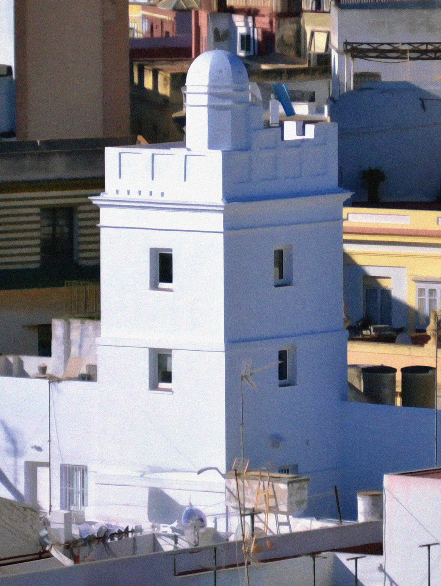
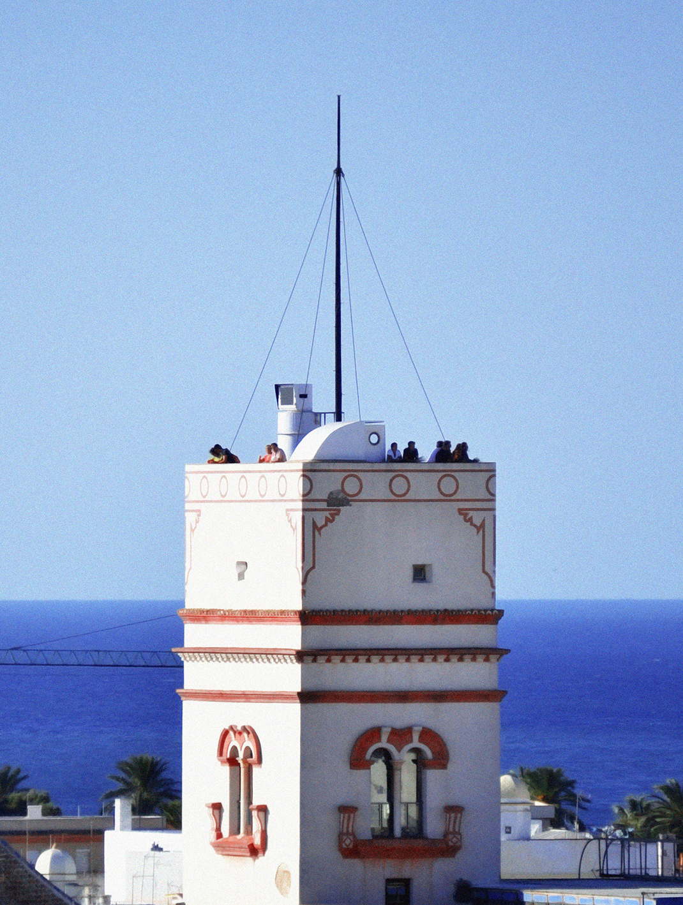
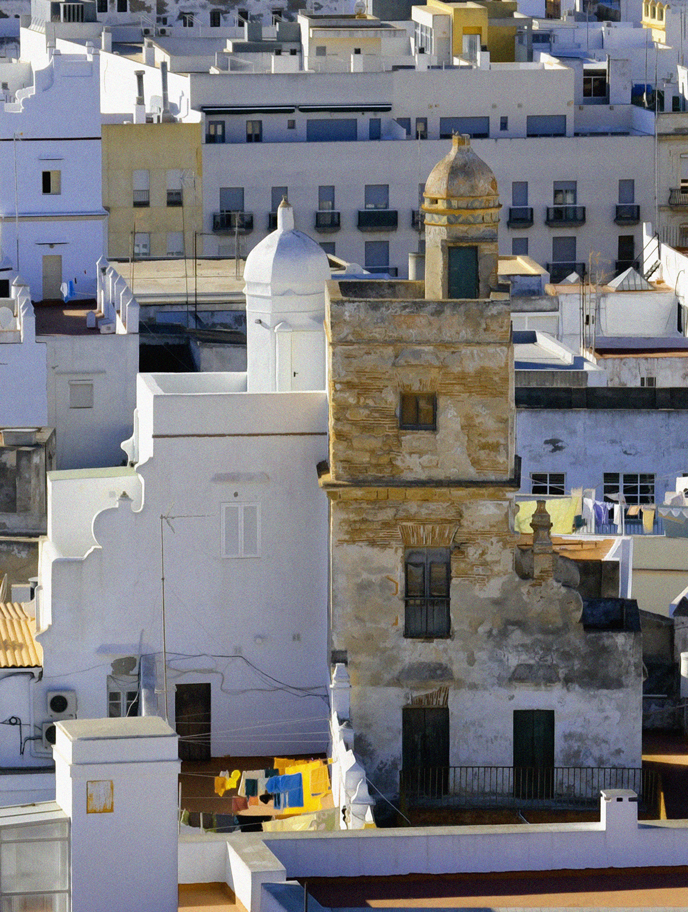

Símbolo de prosperidad
Las torres miradores eran lo primero que divisaban los viajeros que llegaban a Cádiz por mar, es por eso que se volvieron un emblema de la arquitectura gaditana. Su uso se generalizó entre los siglos XVII y XVIII, momento en que tuvo lugar el auge comercial de Cádiz, en que la ciudad era el puerto oficial de mercancía procedente de América. En el S.XVIII, todos los comerciantes gaditanos pudientes, al construir su casa le incorporaban una torre mirador en la parte superior.
Estas torres, solían ser de planta cuadrada, de uno o dos pisos, y en su interior predominaba el uso de la madera para darle una estructura ligera y resistente. Cumplían una doble función: por un lado eran un lugar de ocio y reunión social, donde sus propietarios podían disfrutar de las vistas con su familia y amigos; por otro lado servían como puesto de vigía para observar el tráfico marítimo comercial y saber qué barcos llegaban al puerto.
Cada torre poseía su bandera propia, de forma que los barcos pudieran identificaran la casa de los comerciantes desde alta mar. La mayoría de ellas están situadas a poniente, donde se establecía la clase noble, por su cercanía con el puerto y con las actividades comerciales.
En , las ordenanzas municipales prohibieron la construcción de nuevas torres mirador debido a que se consideraban innecesarias y eran un peligro por el riesgo de derrumbamientos. De esta forma, las existentes se han preservado como parte del legado arquitectónico de la ciudad de Cádiz.
Tipos de Torre Mirador
-
Garita
Es la torre más común en los cielos gaditanos. Torre simple, de planta cuadrada, en cuya terraza hay una garita de vigilancia, que la protege ante las condiciones climáticas adversas, como vientos o lluvias. En su interior alberga una escalera de caracol que permite el acceso a la terraza de la torre. En ella hay una silla, donde se sentaba el propietario o vigilante, para observar el horizonte marino.
-
Sillón

Es una torre de planta cuadrada que se compone de dos niveles, hecho que la hace tan particular. La primera parte es una terraza amplia, abierta, que permite una buena visión del horizonte. La otra parte es una pequeña elevación retraída respecto a la terraza, que le da ese aspecto de sillón. Esta peculiar silueta proporciona una vista privilegiada desde la parte superior y le da una belleza arquitectónica única.
-
Terraza
Es la torre más antigua de las cuatro. Su diseño es sencillo y funcional, no presenta grandes elementos constructivos ni estructuras complejas. Se trata de una torre de planta cuadrada que se eleva y termina en una terraza o azotea plana, ofreciendo una vista panorámica alta. La famosa Torre Tavira pertenece a este estilo.
-
Mixta
Es una torre que combina elementos de la torre de Garita con elementos de la torre de Sillón. En su base, tiene una terraza adelantada que permite una amplia superfície de observación. En el nivel superior, se encuentra una garita de vigilancia. Esta mezcla la convierte, por lo tanto, en la torre más funcional y ostentosa.